В этом уроке:
- перемещаем отдельный объект
В двух последних уроках мы рассмотрели две матрицы.
Первая (projection) позволила нам использовать трехмерные координаты для построения изображения. Всю работу по переводу трехмера в плоское изображение на экране она взяла на себя.
Вторая (view) позволяла управлять камерой. Мы могли посмотреть на изображение с любой точки и под любым углом.
В этом уроке рассмотрим третью матрицу (model), которая позволит нам перемещать, поворачивать, сжимать и растягивать отдельные объекты нашего изображения.
Итак, у нас есть задача – перемещать объект в итоговом изображении. Т.е. надо подвинуть только один объект, а остальные не трогать. Можно конечно динамически менять вершины этого объекта в массиве, который мы передаем в шейдер. Но это не очень хороший путь. Особенно, если необходимо объект повернуть – вам придется самим рассчитывать результат. Да и в производительности проиграем, если каждый кадр будем все координаты в шейдер тащить.
Гораздо удобнее использовать матрицу model. Ей надо будет просто указать какие преобразование вам необходимы, и она сама все рассчитает.
Давайте вспомним, как у нас все работает. Мы из нескольких матриц получаем одну итоговую. И передаем ее в вершинный шейдер. И у нас есть массив вершин. Эти вершины мы прогоняем через шейдер, который преобразует их с помощью итоговой матрицы.
В прошлом уроке мы использовали две матрицы: projection и view. Из них получали итоговую и передавали ее в шейдер. В результате все объекты нашего изображения (т.е. оси и треугольники) проходили через шейдер и были преобразованы в 2D (с помощью projection части итоговой матрицы) и отображены с определенного ракурса и под определенным углом (с помощью view части итоговой матрицы).
В общем, я веду к тому, что две этих матрицы мы применяли для всех объектов. А в этом уроке нам понадобится для одного из объектов применить еще и третью матрицу (в дополнение к тем двум), чтобы влиять на расположение/размеры/поворот только этого объекта и не трогать остальные.
Т.е. projection и view обработают наш объект наравне с остальными объектами, он будет частью общего изображения, а третья матрица дополнительно преобразует (например, сдвинет или повернет) его и только его. Остальные объекты не будут затронуты.
Давайте смотреть код, с ним все это станет понятнее. Скачивайте исходники и открывайте модуль lesson174_model
Смотрим класс OpenGLRenderer. Код в целом уже знаком по прошлым урокам. Прокомментирую только изменения.
У нас описаны 4 матрицы:
mProjectionMatrix – projection матрица
mViewMatrix – view матрица
mModelMatrix - model матрица
mMatrix – итоговая матрица
В методе prepareData задаем массив vertices, в котором описываем три оси и один треугольник.
В методе bindMatrix мы добавили model матрицу к вычислению итоговой матрицы. Перемножаем view и model матрицы, затем результат перемножаем с projection матрицей, получаем итоговую матрицу и передаем ее в шейдер.
Весь основной код из onDrawFrame я для удобства и наглядности разбил на два метода drawAxes и drawTriangle.
В drawAxes мы методом setIdentityM сбрасываем model матрицу. Затем мы вычисляем и передаем в шейдер итоговую матрицу методом bindMatrix. Т.к. мы сбросили model матрицу, то ее перемножение с view матрицей даст view матрицу без изменений. Т.е. сброшенная model матрица никак не повлияет на итоговую матрицу, которая будет содержать только данные из view и projection матриц. Именно это нам и нужно, чтобы нарисовать оси.
Дальнейшие вызовы метода glDrawArrays будут прогонять вершины через шейдер, а шейдер, для получения конечного результата будет использовать итоговую матрицу.
Метод drawTriangle будет рисовать треугольник. Сначала мы на всякий случай снова сбрасываем model матрицу, т.к. перед тем как мы будем ее настраивать, она нужна нам чистой. Далее, в методе setModelMatrix будем задавать нужные нам преобразования в model матрице. И в методе bindMatrix формируем итоговую матрицу и передаем ее в шейдер. Теперь последующие вызовы метода glDrawArrays будут прогонять вершины через шейдер, который содержит матрицу, построенную с учетом настроенной model матрицы. И соответственно те преобразования, которые мы задали в model матрице, будут применены к объекту, который будет нарисован шейдером. В нашем случае – это треугольник.
Это, пожалуй, ключевой момент урока и его надо понять. Т.е. для отрисовки осей мы вычисляем итоговую матрицу с пустой model матрицей, а для треугольника – с model матрицей, в которой будем настраивать преобразования. В итоге оси будут нарисованы так, как и должны, а треугольник будет сдвинут/повернут/сжат/растянут, смотря какие преобразования настроим в model матрице.
Метод setModelMatrix пока что пустой. Т.е. мы пока никак не настраиваем model матрицу, и треугольник будет нарисован без каких-либо преобразований.
Запускаем
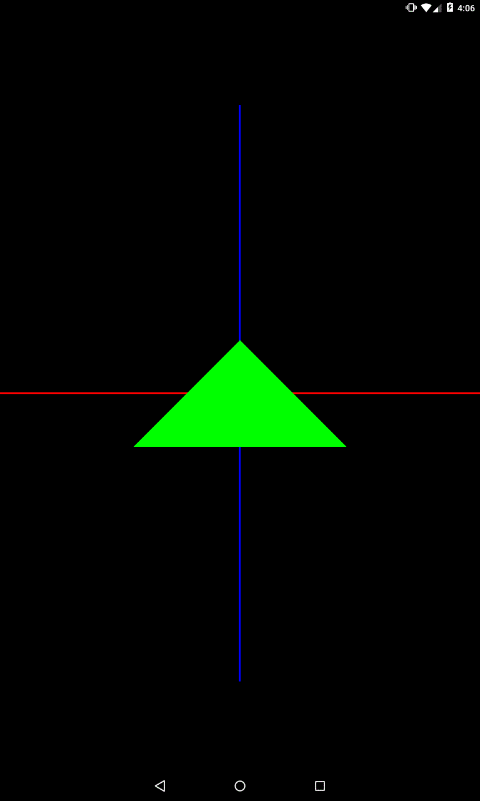
Translate
Теперь давайте сдвинем треугольник вправо на 1. Перепишем setModelMatrix
private void setModelMatrix() {
Matrix.translateM(mModelMatrix, 0, 1, 0, 0);
}
Метод translateM настраивает матрицу на перемещение. В нем мы указываем model матрицу и нулевой отступ. Последние три параметра – это значение смещения соответственно по осям X, Y и Z. Мы задаем смещение по оси X, на 1. Т.к. камера смотрит на изображение с оси Z, то сместив треугольник по оси X на 1, мы получим смещение вправо.
Теперь при запуcке bindMatrix, который идет перед рисованием треугольника, итоговая матрица будет рассчитана с учетом настроенной model-матрицы, и это скажется на том, как будет нарисован треугольник – он будет сдвинут вправо.
Запускаем
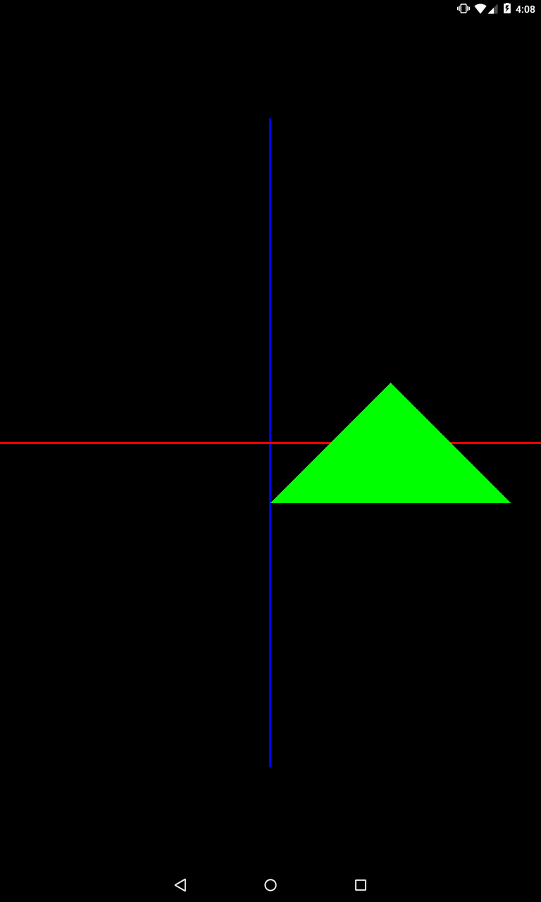
Треугольник смещен вправо. Обратите внимание, что мы не меняли изначальные вершины треугольника в массиве. Смещение реализовано матрицей. И реализовано оно только для треугольника, а оси остались на месте. Так получилось из-за того, что использовались разные итоговые матрицы при отрисовке осей и треугольника.
Давайте дальше тестировать
private void setModelMatrix() {
Matrix.translateM(mModelMatrix, 0, -1, 0, 0);
}
Смещение на -1 по X
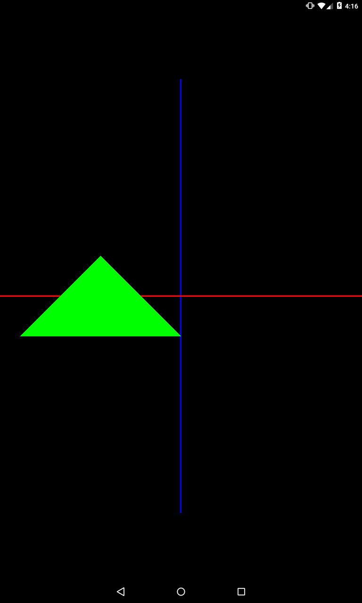
private void setModelMatrix() {
Matrix.translateM(mModelMatrix, 0, 0, 2, 0);
}
Смещение по оси Y на 2
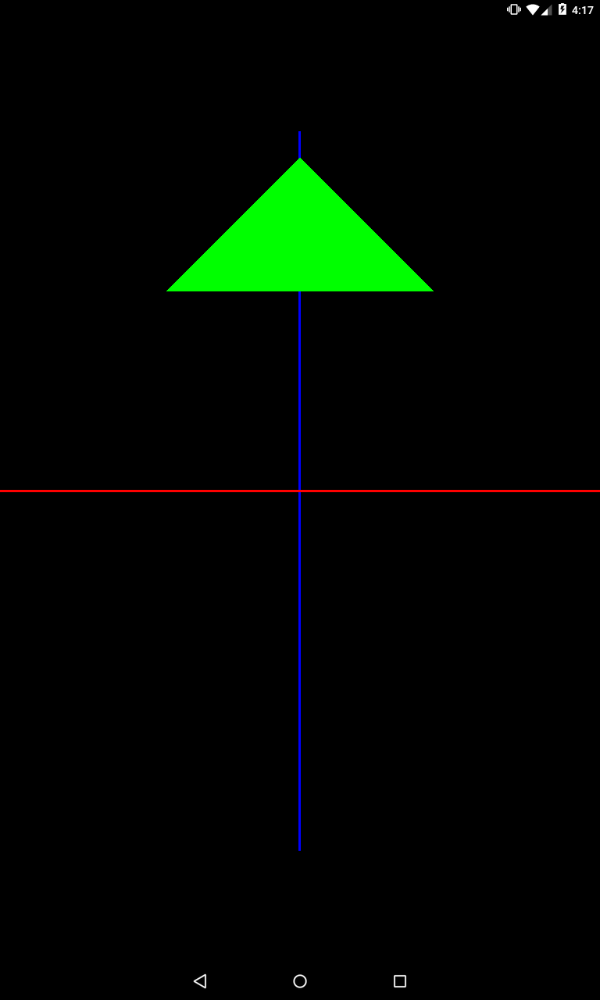
private void setModelMatrix() {
Matrix.translateM(mModelMatrix, 0, 0, 0, 2);
}
Смещение по оси Z на 2.
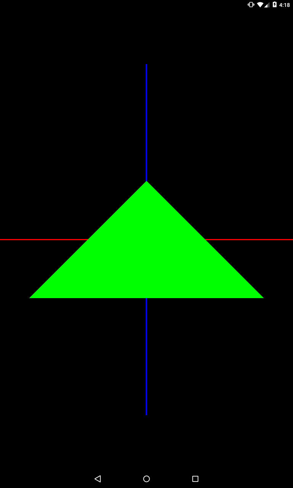
Т.к. камера у нас в точке (0,0,5), то треугольник, сместившись по оси Z, стал располагаться ближе к камере и стал выглядеть крупнее.
Давайте теперь отдалим его
private void setModelMatrix() {
Matrix.translateM(mModelMatrix, 0, 0, 0, -1);
}
Смещение по оси Z на -1.
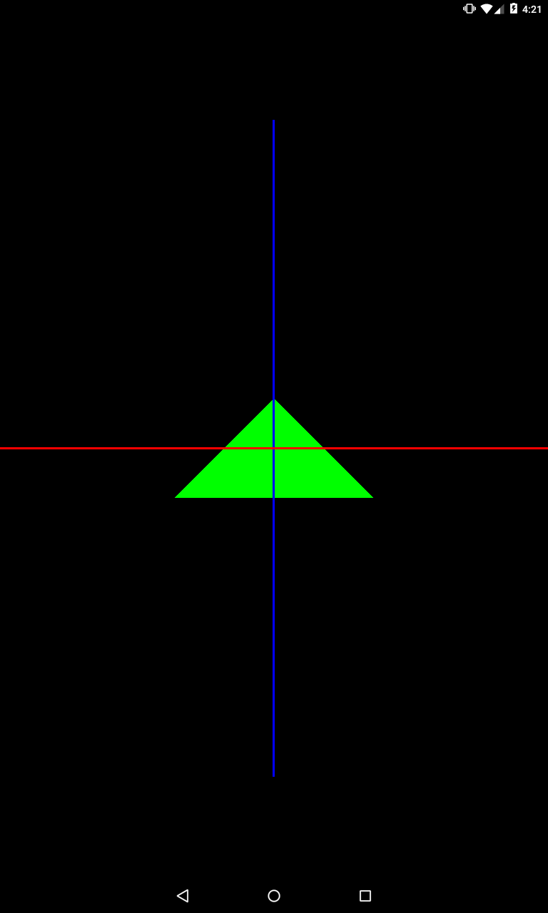
Треугольник стал расположен дальше и видно, что он ушел за пересечение осей.
Разумеется, одновременно можно указывать смещение по нескольким осям сразу. Попробуйте это самостоятельно.
Scale
Рассмотрим возможности сжатия/растягивания. Метод scaleM аналогичен методу translateM, но последние три параметра задают не смещение, а коэффициент сжатия по каждой оси.
private void setModelMatrix() {
Matrix.scaleM(mModelMatrix, 0, 1, 1, 1);
}
Задаем три единицы, т.е. объект никак не изменится ни по одной из осей.
private void setModelMatrix() {
Matrix.scaleM(mModelMatrix, 0, 2, 1, 1);
}
Мы задали коэффициент 2 для оси X, т.е. объект будет увеличен в два раза вдоль оси X. В нашем примере – это будет увеличение ширины.
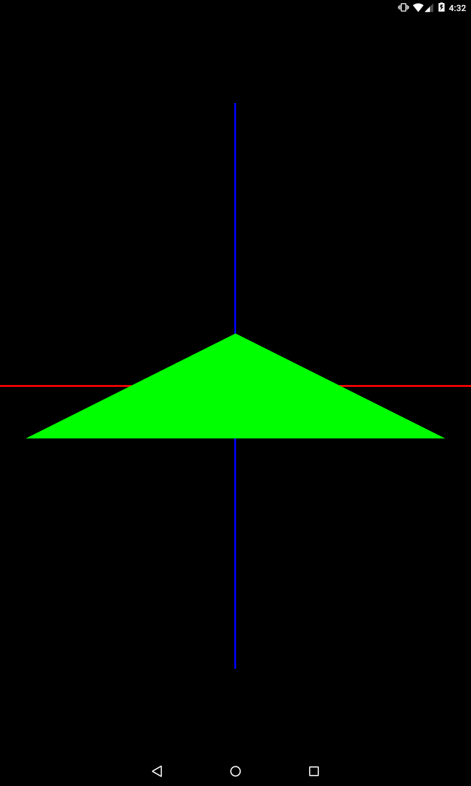
private void setModelMatrix() {
Matrix.scaleM(mModelMatrix, 0, 1, 3, 1);
}
Коэффициент 3 по оси Y. В нашем примере это будет увеличение высоты в три раза.
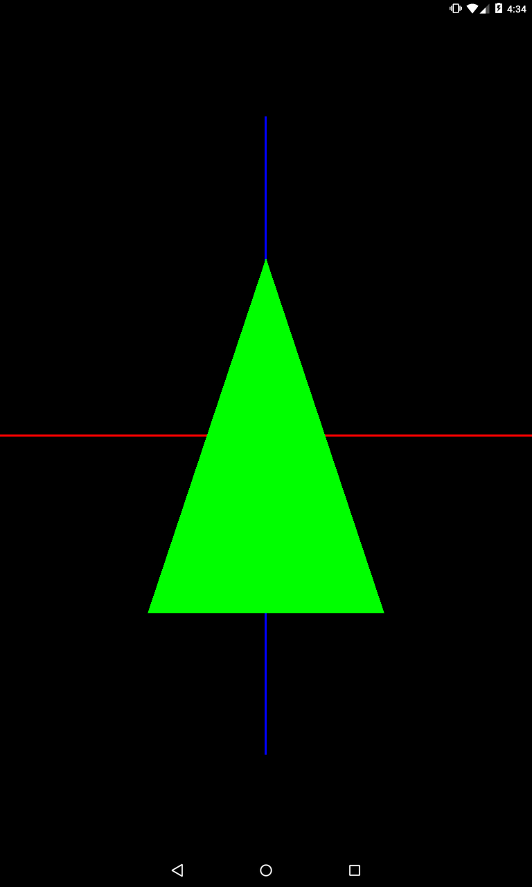
Если задать коэффициент меньше единицы, то объект будет сжат. Сожмем его по оси X.
private void setModelMatrix() {
Matrix.scaleM(mModelMatrix, 0, 0.5f, 1, 1);
}
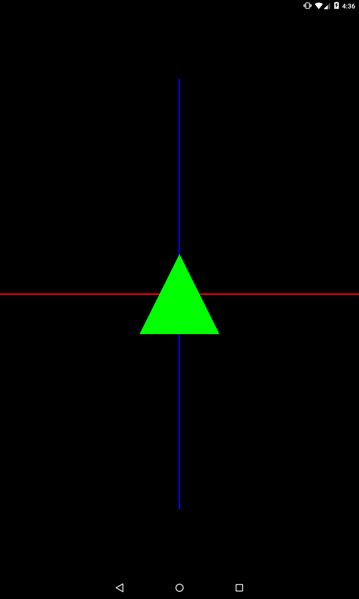
Если задать отрицательный коэффициент, то объект будет зеркально отражен.
private void setModelMatrix() {
Matrix.scaleM(mModelMatrix, 0, 1, -2, 1);
}
Мы задали коэффициент -2 для оси Y. Объект будет увеличен в два раза в высоту и зеркально отражен по оси Y.
Можно задавать значения сразу для несколько осей
private void setModelMatrix() {
Matrix.scaleM(mModelMatrix, 0, 2, 0.5f, 1);
}
Растянули по оси X и сжали по Y
Rotate
Осталось рассмотреть поворот. Для этого используется метод rotateM, в котором мы задаем угол поворота и ось поворота.
private void setModelMatrix() {
Matrix.rotateM(mModelMatrix, 0, 45, 0, 0, 1);
}
Здесь мы задали угол в 45 градусов, а ось поворота – (0,0,1). Т.е. из начала системы координат (точка (0,0,0)) проводится ось через заданную нами точку (0,0,1). И вокруг этой оси и будет выполнен поворот.
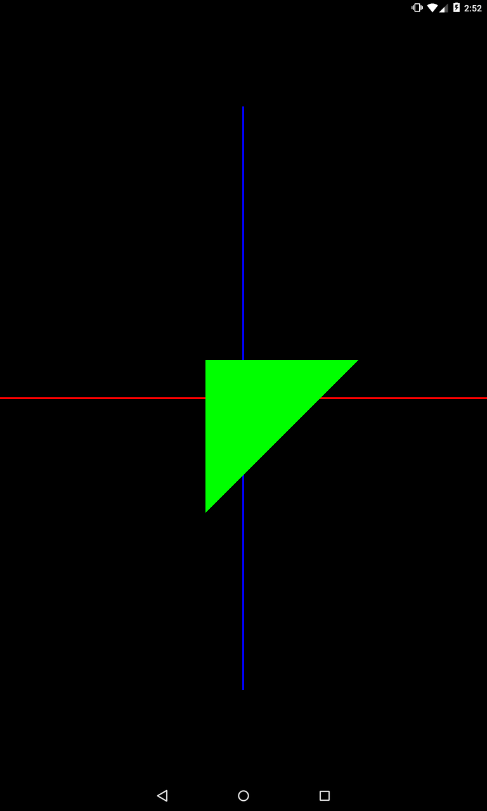
Треугольник повернулся на 45 против часовой стрелки. Почему против часовой?
Ось из (0,0,0) в (0,0,1) смотрит прямо в камеру. Треугольник повернулся на 45 по часовой, если смотреть вдоль по направлению этой оси. Т.к. камера смотрит прямо противоположно оси поворота, то она видит, как треугольник повернулся на 45 против часовой.
Давайте поменяем направление оси так, чтобы оно совпадало с направлением камеры. Для этого надо просто задать отрицательное значение Z.
private void setModelMatrix() {
Matrix.rotateM(mModelMatrix, 0, 45, 0, 0, -1);
}
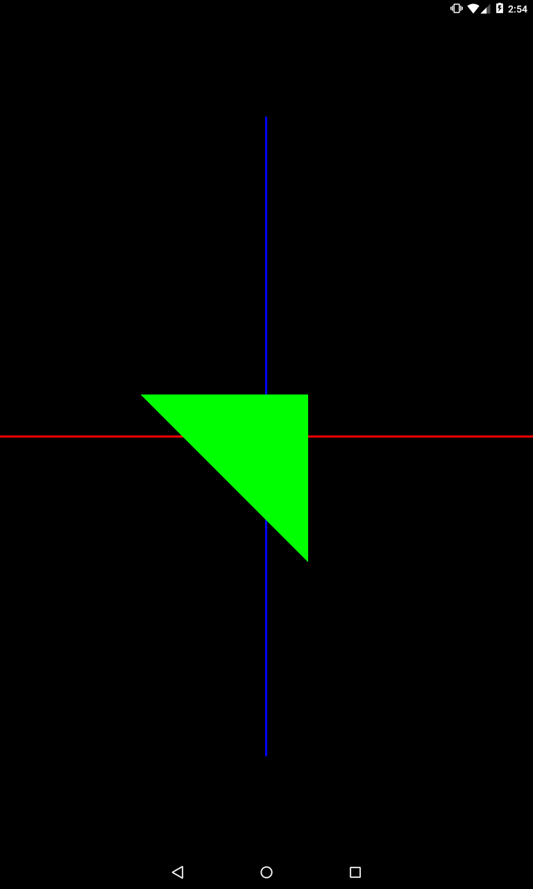
Ось из точки (0,0,0) в точку (0,0,-1) совпадает с направлением камеры и теперь камера видит поворот по часовой.
Зададим угол в 180 градусов
private void setModelMatrix() {
Matrix.rotateM(mModelMatrix, 0, 180, 0, 0, -1);
}
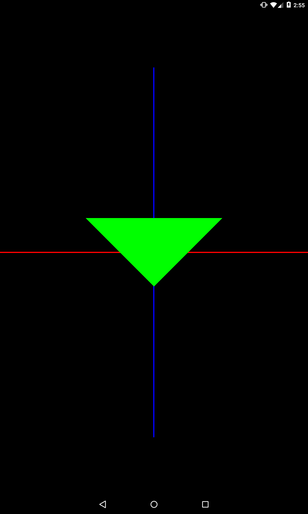
Треугольник повернулся вниз головой.
Чуть позже рассмотрим повороты вокруг осей X и Y и добавим анимации, но сначала давайте разберем один важный момент.
Вы можете задавать более одного преобразования в матрице. Причем преобразования могут быть как одного типа, так и разных.
Например, два изменения размера
private void setModelMatrix() {
Matrix.scaleM(mModelMatrix, 0, 2, 1, 1);
Matrix.scaleM(mModelMatrix, 0, 1, 0.5f, 1);
}
Результат будет суммирован.
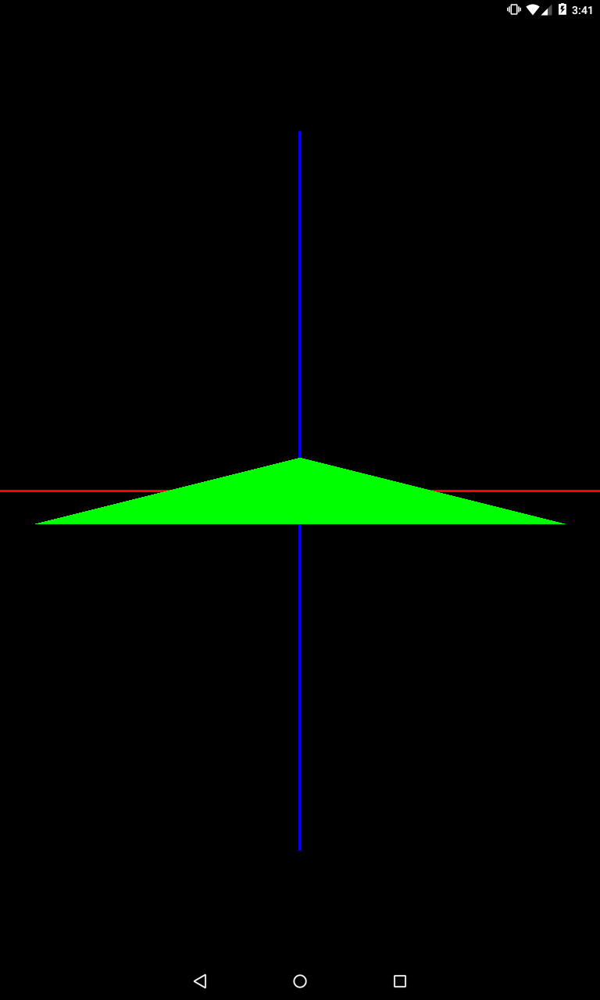
Треугольник и растянулся в два раза по оси X и сжался до 0.5 по оси Y. Разумеется, результат будет таким же, если мы укажем сразу оба преобразования в одном вызове метода
private void setModelMatrix() {
Matrix.scaleM(mModelMatrix, 0, 2, 0.5f, 1);
}
Пример с двумя перемещениями
private void setModelMatrix() {
Matrix.translateM(mModelMatrix, 0, 1, 0, 0);
Matrix.translateM(mModelMatrix, 0, 0, 2, 0);
}
Оба перемещения будут применены
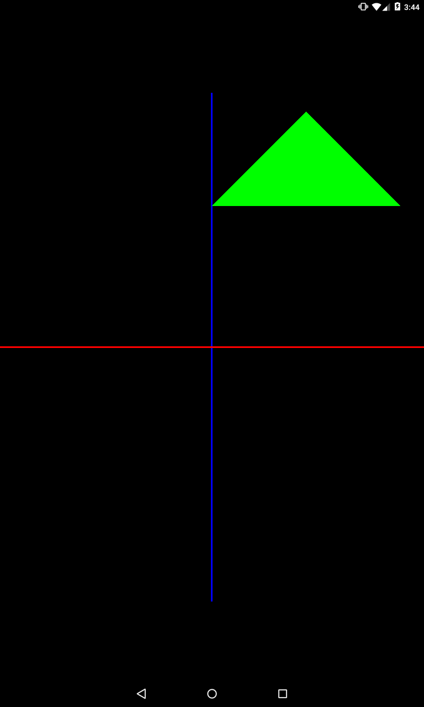
Треугольник сдвинут на 1 по оси X и на 2 по оси Y.
Их также можно объединить в одно
private void setModelMatrix() {
Matrix.translateM(mModelMatrix, 0, 1, 2, 0);
}
Перемещение и размер
private void setModelMatrix() {
Matrix.scaleM(mModelMatrix, 0, 1, 2, 1);
Matrix.translateM(mModelMatrix, 0, 1, 0, 0);
}
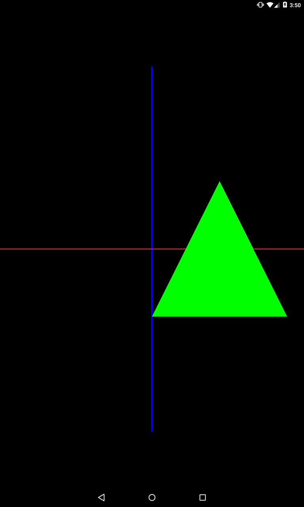
Треугольник подвинут на 1 по оси X и растянут в два раза вдоль оси Y
Все просто вроде, но будьте аккуратны. В некоторых случаях порядок преобразований имеет значение.
Рассмотрим пример: поворот + перемещение
Для начала давайте сдвинем камеру чуть дальше от треугольника, чтобы обзор был больше. Для этого в методе createViewMatrix поменяйте значение
float eyeZ = 8;
Далее задаем преобразования
private void setModelMatrix() {
Matrix.translateM(mModelMatrix, 0, 2f, 0, 0);
Matrix.rotateM(mModelMatrix, 0, 45, 0, 0, 1);
}
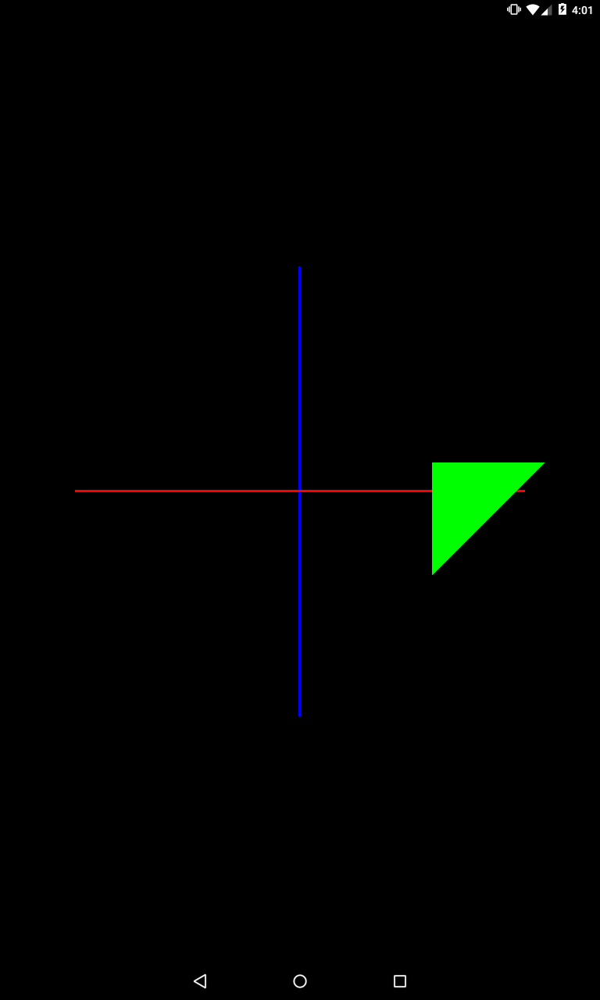
Видим, что треугольник был повернут на 45 градусов вокруг оси Z и смещен на 2 по оси X.
Т.е. сначала был выполнен поворот, затем перемещение.
Поменяем местами преобразования:
private void setModelMatrix() {
Matrix.rotateM(mModelMatrix, 0, 45, 0, 0, 1);
Matrix.translateM(mModelMatrix, 0, 2f, 0, 0);
}
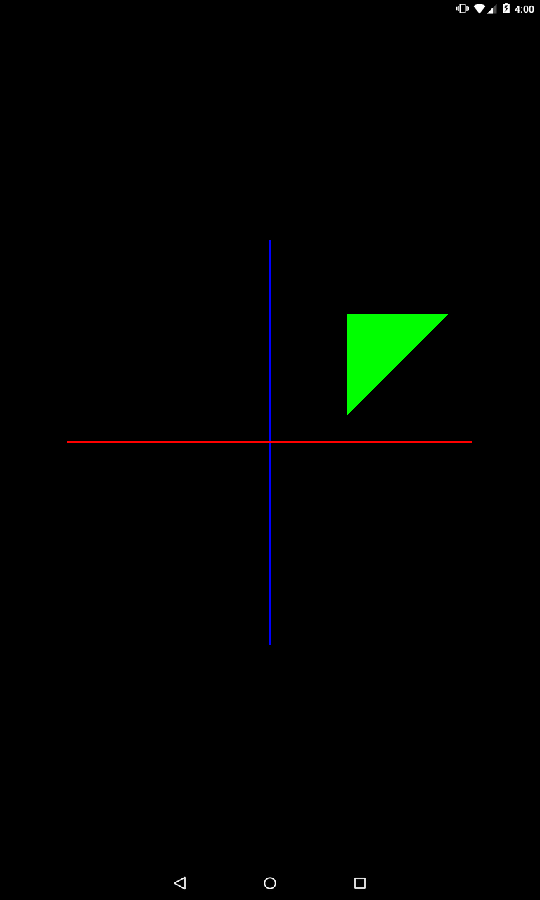
Казалось бы, те же операции, а результат другой. Это потому, что изменился порядок операций. Сначала треугольник был смещен на 2 по оси X. А затем из этой позиции был повернут относительно оси Z, и соответственно уехал вверх.
Т.е. похоже, что операции выполняются в порядке обратном тому, что мы задаем в коде. Учитывайте этот момент, когда выполняете несколько преобразований.
Давайте добавим анимации для наглядности
private void setModelMatrix() {
float angle = (float)(SystemClock.uptimeMillis() % TIME) / TIME * 360;
Matrix.rotateM(mModelMatrix, 0, angle, 0, 0, 1);
Matrix.translateM(mModelMatrix, 0, 2f, 0, 0);
}
В переменной angle будет меняться угол от 0 до 360 каждые 10 секунд.
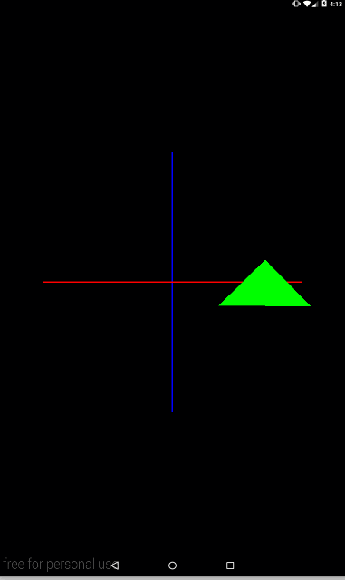
С анимацией явно видно, что треугольник каждый кадр сначала сдвигается по оси X, а затем поворачивается вокруг оси Z.
Снова поменяем местами операции преобразования, чтобы посмотреть как это будет выглядеть в анимации
private void setModelMatrix() {
float angle = (float)(SystemClock.uptimeMillis() % TIME) / TIME * 360;
Matrix.translateM(mModelMatrix, 0, 2f, 0, 0);
Matrix.rotateM(mModelMatrix, 0, angle, 0, 0, 1);
}
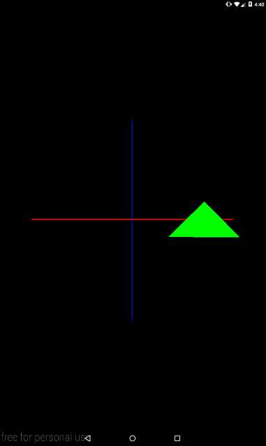
Тут уже видно, что каждый кадр треугольник сначала поворачивается вокруг оси Z, а затем мы его сдвигаем по оси X вправо.
Еще раз распишу на всякий случай, что вообще происходит.
1) В методе prepareData мы подготовили в массиве данные по вершинам, а в методе bindData передали их вершинному шейдеру. Эти методы у нас были вызваны один раз в самом начале, в методе onSurfaceCreated. Т.е. мы передаем данные по вершинам только один раз, а не каждый кадр!
2) При отрисовке каждого кадра система вызывает метод onDrawFrame. В нем мы вызываем glDrawArrays, в котором указываем какие вершины (из тех, что мы передали в пункте 1) шейдер должен взять и какой примитив из них нарисовать.
3) Кроме этого, в onDrawFrame мы пересчитываем матрицу и передаем ее в шейдер. Т.е. мы делаем это не один раз в самом начале, как вершины, а именно каждый кадр. И т.к. мы каждый кадр настраиваем model матрицу с помощью метода rotateM и постоянно меняющейся переменной angle, то каждый новый кадр итоговая матрица содержит данные, отличающиеся от данных которые она содержала во время отрисовки предыдущего кадра.
4) В итоге, каждый кадр шейдер берет данные, которые мы передали ему в пункте 1, применяет к ним полученную в текущем кадре итоговую матрицу и отдает системе рассчитанные координаты вершин. В результате каждый новый кадр объект рисуется на другом месте и именно это дает нам анимацию.
Теперь можно вернуться к повороту и рассмотреть его подробнее.
Немного сместим камеру, чтобы видеть треугольник под углом. Так будет лучше видны повороты по всем осям. Для этого в методе createViewMatrix поменяйте положение камеры
float eyeX = 2;
float eyeY = 2;
float eyeZ = 3;
А в преобразовании зададим поворот
private void setModelMatrix() {
float angle = (float)(SystemClock.uptimeMillis() % TIME) / TIME * 360;
Matrix.rotateM(mModelMatrix, 0, angle, 0, 0, -1);
}
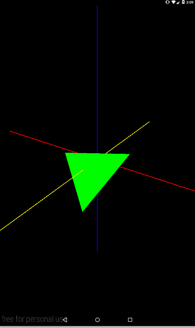
Видим вращение вокруг оси Z (желтая). Давайте попробуем также оси X и Y.
В методе setModelMatrix поменяйте параметры метода rotateM:
Matrix.rotateM(mModelMatrix, 0, angle, 1, 0, 0);
Теперь треугольник будет крутиться вокруг оси X (красная)
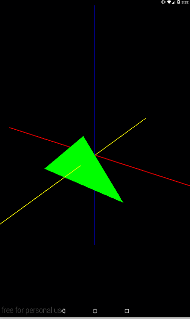
Ось Y (синяя)
Matrix.rotateM(mModelMatrix, 0, angle, 0, 1, 0);
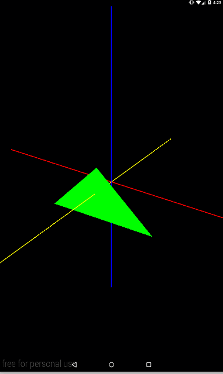
Теперь ось, проведенная в точку (0,1,1)
Matrix.rotateM(mModelMatrix, 0, angle, 0, 1, 1);
Попробуйте представить себе ось, которая идет из точки (0,0,0) в точку (0,1,1) – т.е. она будет пролегать между осями Y и Z. И вокруг нее будет крутиться треугольник.
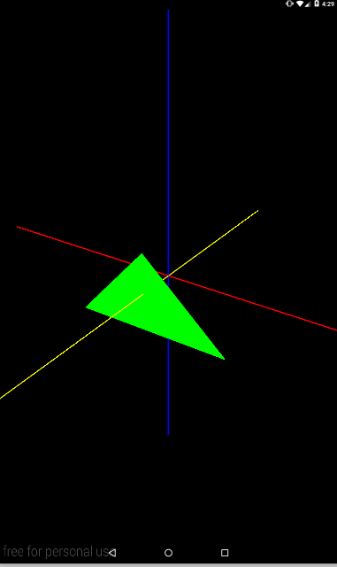
В качестве небольшой самостоятельной работы, попробуйте выводить на экран ось поворота, так же, как мы в прошлом уроке выводили up-вектор. Это даст больше наглядности повороту.